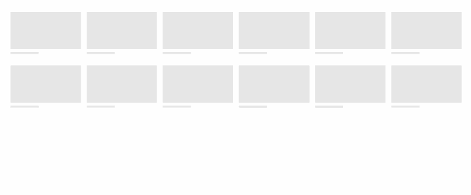

现代Web技术让我们离容器查询更近一步
作者：大漠 日期：2021-11-17 点击：984
特别声明：如果您喜欢小站的内容，可以点击申请会员进行全站阅读。如果您对付费阅读有任何建议或想法，欢迎发送邮件至: airenliao@gmail.com!或添加QQ：874472854(^_^)
* 文本为付费内容（4.99元），您已获得全文阅读权限
十年前的 CSS 媒体查询 特性给 Web设计和开发带来新的变革，十年后的今天，CSS的容器查询 给 Web 设计和开发又进一步的带来质的变革。虽然CSS容器查询特性很强大，但它还只是部分主流浏览器的实验属性。因此要用到生产中还有要能要走一段漫长的路。不过，庆幸的是，现代的一些 Web 技术（比如，Flexbox、Grid、媒体查询和比较函数等）让我们离容器查询特性更近一步。今天我们来看看，这些现代Web技术是如何让我们离容器查询更近一步。
背景
通过《初探CSS容器查询》和《容器查询中的 container 和 @container》两篇文章中可以获知：
广大Web设计师和开发者所期待的、真正的CSS容器查询已经离我们越来越近了。
真正的CSS容器查询是 CSS 全新的特性，但也是对媒体查询的补充，他和媒体查询最大的差异是：CSS媒体查询是基于浏览器视窗宽度或媒体特性来做条件判断；CSS容器查询是于容器尺寸、样式或状态等条件来做判断。
对于Web开发者而言，在为Web构建组件时，并不总是知道该组件将被如何使用。也许它会和浏览器的视窗一样宽；也许有是一排二；也许它将被放在某个狭窄的栏目中（比如侧边栏）。它的宽度并不总是与浏览器视窗宽度相关。通常情况下，如果能对组件的CSS进行基于容器的查询，将是非常的方便的。也就是说，如果组件能够让你基于容器的尺寸做出响应，而不是基于视窗尺寸做出响应，这对于基于组件的设计是非常有帮助的，因为你不再需要为同一组件创建该组件的变体。
针对于这样的场景，你可能首先会想到 CSS 的一些现代布局技术，比如使用 Flexbox、Grid 或者一些CSS函数，我们可以创建响应容器和内容宽度的样式，并克服容器查询所要解决的一些痛点。但它们之间还是有着本质的差异。接下来我们就来一起探讨这方面的差异。
问题所在
我们从实际需求出发。我想大家平时在开发的时候，应该碰到像下图这样的需求：
正如上图所示：
- 视窗变窄，窄到一行只能放置一个卡片时（想象在移动端），三个卡片在垂直方向堆叠（从上往下，一个一个）放置，但它们向用户呈现的效果是一致的
- 视窗变宽，但没有足够空间一排容纳三个卡片时，第三个卡片会换行，并且在 UI 的呈现上也与其他卡片不同（它可以是故意的），你可以认为第三个卡片是特别的（卡片的变体）
- 视窗有足够宽的空间或卡片容器有足够宽的空间，卡片一排三
请不要在意这样设计的原因和理由。我们现在要考虑的是如何跳过这个中间的布局状态，直接从垂直堆叠（从上往下，一个一个放置）切换到水平一排三（从左向右，一个一个放置）？有什么办法呢？
或许你会说，使用 CSS 媒体查询很容易就能做到，使用 @media 在不同的断点下为卡片组件提供不同的 UI样式。
甚至可能还有更多的断点查询，比如在大的显示器上，为了让示例不那么复杂，只要是大于 768px 断点的，卡片都是一排三的水平放置：
看上去是OK的？事实呢？或许并不是这样的。因为，CSS @media 断点是设计系统的大忌。我们构建的 Web 组件（比如这个卡片组件），在上下文之外定义，可以在任何宽度的容器（父元素或其祖先元素）中实例化。上下文是可变的，但@media查询（断点查询）所能做的是根据浏览器视窗宽度这个常数来调整组件UI样式。
简单地说，对于Web组件来说，媒体查询是一种错误，因为我们永远不知道Web组件的大小。我们用下面这张图来展示这个问题：
要解决这个问题，CSS媒体查询是无法做到的，只有容器查询才能实现。
使用现代Web技术创建响应容器或内容宽度的样式
文章开头提到，针对于这样的场景，你可能会想到一些现代Web布局技术，比如 Flexbox、Grid布局，甚至你还会想到使用 CSS 函数中的比较函数、数学四则运算 和 CSS的动态计算等技术创建响应容器和内容宽度的样式。
我们的示例将以三个卡片的布局为例，构建这个示例我们需要的 HTML 结构如下：
<!-- HTML -->
<div class="container">
<div class="card">
<img src="https://picsum.photos/2568/600?random=1" width="2568" height="600" alt="" class="card__thumbnail" />
<div class="card__badge">Must Try</div>
<h3 class="card__title">Best Brownies in Town</h3>
<p class="card__describe">High quality ingredients and best in-class chef. Light, tender, and easy to make~</p>
<button class="card__button">Order now</button>
</div>
<div class="card"></div>
<div class="card"></div>
</div>
注意，如果没有特别声明，后面的示例都将以这个 HTML 作为示例所需的 DOM 结构。
为了省事，单张卡片的使用 CSS Grid 来布局，并且添加一点CSS来美化卡片：
.card {
display: grid;
border-radius: 12px;
background-color: #fff;
color: #454545;
gap: 10px;
box-shadow: 0 0 0.35em 0 rgb(0 0 0 / 0.5);
}
.card__thumbnail {
aspect-ratio: 16 / 9;
object-fit: cover;
object-position: center;
border-radius: 12px 12px 0 0;
grid-area: 1 / 1 / 2 / 2;
z-index: 1;
}
.card__badge {
grid-area: 1 / 1 / 2 / 2;
z-index: 2;
background-color: #2196f3;
border-radius: 0 10rem 10rem 0;
align-self: start;
justify-self: start;
margin-top: 2rem;
color: #fff;
padding: 5px 12px 5px 8px;
text-shadow: 0 0 1px rgb(0 0 0 / 0.5);
filter: drop-shadow(0px 0px 2px rgb(0 0 0 / 0.5));
}
.card__title {
font-weight: 700;
font-size: clamp(1.2rem, 1.2rem + 3vw, 1.5rem);
padding: 0 20px;
white-space: nowrap;
text-overflow: ellipsis;
overflow: hidden;
}
.card__describe {
color: #666;
line-height: 1.4;
padding: 0 20px;
display: -webkit-box;
-webkit-box-orient: vertical;
-webkit-line-clamp: 3;
overflow: hidden;
}
.card__button {
display: inline-flex;
justify-content: center;
align-items: center;
border: none;
border-radius: 10rem;
background-color: #feca53;
padding: 10px 20px;
color: #000;
text-decoration: none;
box-shadow: 0 3px 8px rgb(0 0 0 / 7%);
transition: all 0.2s linear;
font-weight: 700;
justify-self: end;
margin: 0 20px 20px 0;
cursor: pointer;
}
你看到的卡片效果如下图所示：
为了能更好的实时调整卡片容器（.container）的宽度，示例中使用简单几行 JavaScript 脚本来动态调整 CSS 自定义属性 --width 的值，并且使用%单位，容器.container 根据其父元素宽度来动态计算：
.container {
inline-size: var(--width, 50%);
}
const rootEle = document.documentElement;
const range = document.getElementById("width");
const output = document.getElementById("output");
range.addEventListener("change", (etv) => {
rootEle.style.setProperty("--width", `${etv.target.value}%`);
output.textContent = `${etv.target.value}%`;
});
如果你从未接触过 CSS 自定义属性且对这方面特性感兴趣，那么可以点击这里阅读小站上关于 CSS 自定义属性相关的教程。
使用 Flexbox 的容器查询解决方案
我们先来看看使用 Flexbox 如何实现类似容器查询的效果。
时至今日，Flexbox已是主流布局了。我们显式在卡片容器.container设置display的值为flex或inline-flex，就创建了一个Flexbox上下文（FFC）：
.container {
display: flex;
}
这个时候，Flex项目（.card）会根据Flexbox容器可用空间自动分配空间，当Flexbox容器可以用空间不足以容纳Flex项目时，会溢出Flexbox容器：
你可能会想到在Flexbox容器上显式设置flex-wrap: wrap，在Flexbox容器可用空间不足时让Flex项目换行排列。
.container {
display: flex;
flex-wrap: wrap;
}
但事实上，并非如你所期待的那样。在Flexbox容器上显式设置flex-wrap: wrap时，表示Flex项目换行显示。在Flex项目未显示设置卡片宽度时，Flex项目会以100%来解析Flex项目，这个时候，不管Flexbox容器大小是多少，你所看到的是每行一个Flex项目（卡片）：
可以在Flex项目上显式设置flex-basis来改变这一现象：
.container > .card {
flex-basis: 260px;
}
上面的代码设置了Flex项目（卡片）的初始宽度，即 260px。这个时候，不管Flexbox容器宽度如何调整，Flex项目的宽度都会是 260px。但前面碰到的问题依旧存，Flex项目并不会根据Flexbox容器剩余空间自动扩展或收缩。
在 Flexbox 布局中，一般使用下面的规则来决定 Flex 项目的尺寸：
首先根据
content➜width➜flex-basis来决定用哪个来决定用于Flex项目。如果Flex项目显式设置了flex-basis属性，则会忽略content和width。而且min-width是用来设置Flex项目的下限值；max-width是用来设置Flex项目的上限值。
用一个简单的流程图来描述：
不过，我们希望卡片组件是灵活的，可以扩展和收缩。然而，我只想让这些 Flex 项目（卡片组件）的宽度占Flexbox容器宽度的 33.333% 或 100%。即 Flex项目的宽度不会小于 33.333%或大于100%。
在 Flexbox 布局中，可以在Flex项目上显式设置flex-grow: 1确保该列将在算法和其他属性值允许的范围内填充尽可能多的空间：
.container > .card {
flex-basis: 33.333%;
flex-grow: 1;
}
上面的代码致使Flexbox有剩余空间时，Flex项目可以基于flex-basis的值增长。
注意，Flexbox布局中
flex-grow、flex-shrink和flex-basis，即 Flex项目的计算是件非常复杂的事情。如果你对这方面的知识感兴趣的话，可以阅读《Flexbox布局中不为人知的细节》、《你真的了解CSS的flex-basis吗？》和《聊聊Flexbox布局中的flex的演算法》。文章中详细介绍了 Flex 项目的计算以及相关的算法。
这个时候，你将看到的效果如下：
虽然 Flex 项目能自动扩展，填充Flexbox容器，但离我们的目标效果还是有点远的。不过，不用担心，我们是有办法解决的。先来看 @Heydon Pickering 提出的方法，他把该方法称为 Flexbox信天翁（"Flexbox Albatross"）。就是在 flex-basis 上使用 calc() 做一些计算。比如：
.container > .card {
flex-grow: 1;
flex-basis: calc((35rem - 100%) * 999);
}
关键是在所需的点上进行这种转换。这里把这个点定在 35rem。calc((35rem - 100%) * 999) 所起的作用是 在低于35rem的情况下，Flex项目（卡片组件）将被放在同一行；在35rem以上时，它们将各自拥有自己的一行（Flex项目宽度扩展到100%）。其原理是，如果 flex-basis 的值高得离谱，比如 999rem，宽度将是 100%；如果它的值低得离谱，比如 -999rem，它将默认为 33.3333%。
这样就达到我们所要的效果：
最终效果如下：
拖动示例中滑块，改变Flexbox容器宽度，看到的效果如下：
使用 Grid 的容器查询解决方案
CSS Grid 要比 Flexbox 更为魔性，在不依赖 CSS 媒体查询特性，只使用 CSS Grid 的几个特性，repeat()、minmax()、fr、auto-fit（或 auto-fill ）就可以构建类似下图这样的效果：

上图的效果也是根据容器宽度来做出布局响应的。回到我们的示例中，只需要下面的代码就可以让卡片布局根据网格容器宽度做出调整：
.container {
display: grid;
grid-template-columns: repeat(auto-fit, minmax(260px, 1fr));
gap: 1rem;
}
拖动示例中滑块改变网格容器宽度，效果如下：
简单的解释一下 repeat(auto-fit, minmax(260px, 1fr))。
repeat()函数能把定义的列行为应用到所有存在的列，这使得它可以扩展到任何类型的内容所能创建的任何数量的列auto-fit来替代repeat()函数的是数字参数，它负责确保列保持等宽，通过拉伸列来填补任何可用空间minmax(min, max)函数来设置允许的最小列宽（min），即示例中的260px和最大列宽（max），即示例中的1frfr是只存于 CSS Grid中的单位，示例中的1fr表示把网容可用空间分成一等份，相当于100%，确保内容在空间允许的范围内填满该列
在minmax()函数中的min和max值，也可以使用相对单位，比如rem，但在该示例中不要使用%，因为它会阻止列的折叠。还有，示例中minmax()函数中的min值是260px，它表示卡片的最小宽度。
事实上，我们并不知道卡片组件实际尺寸，即它的最小宽度是未知的。按理说，我们可以使用内在尺寸（根据卡片内容来决定大小）min-content 来替代 260px，但不幸的是，到目前为止，min-content是不能用于repeat()函数中。
自动重复（
auto-fill或auto-fit）不能与内在尺寸（比如min-content、max-content）或fr为单位尺寸相结合。
不过，值得庆幸的是，如果你希望动态调整这个最小尺寸，我们可以使用 CSS 的自定义属性，这样只需要简单的几行脚本就可以动态的调整卡片最小宽度。如果换成 CSS 自定义属性，可以像下面这样使用：
.container {
--min-card-size: 260px;
display: grid;
grid-template-columns: repeat(auto-fit, minmax(var(--min-card-size), 1fr));
}
最后再提一点，使用 CSS 自定义属性，可以让我们离容器查询更进一步，@Mathias Hülsbusch 把这种技术称为 乌鸦（Raven）技术。但这种技术会让代码变得非常复杂，比如：
.container {
--columns_wide:5;
--columns_medium:2;
--columns_small:1;
--grid-gap:0.5rem;
--grid-width_wide: calc((100% - (var(--columns_wide) - 1) * var(--grid-gap)) / var(--columns_wide));
--grid-width_medium: calc((100% - (var(--columns_medium) - 1) * var(--grid-gap)) / var(--columns_medium));
--grid-width_small: calc((100% - (var(--columns_small) - 1) * var(--grid-gap)) / var(--columns_small));
--grid-width: calc(
min(var(--is_wide) * var(--very_big_int), var(--grid-width_wide)) +
min(var(--is_medium) * var(--very_big_int), var(--grid-width_medium)) +
min(var(--is_small) * var(--very_big_int), var(--grid-width_small))
);
display: grid;
gap:var(--grid-gap);
grid-template-columns: repeat(auto-fill, var( --grid-width));
}
试问一下，这样的代码你能看懂吗？就我个人而言，我不建议在实际生产中使用这样的代码，因为它让代码变得复杂难于维护。如果你对这个技术感兴趣的话，可以详细阅读 @Mathias Hülsbusch 的博文《The Raven Technique: One Step Closer to Container Queries》。或者阅读我早期整理的关于CSS自定义属性的几篇文章：
现代Web技术创建的响应容器存在的缺陷
虽然现代Web技术，比如前文提到的Flexbox和Grid相关特性让我们离容器查询更近一步，但还是存有一定的缺陷。就拿文章开头提到的目标：
不管我们使用Flexbox还是Grid总是无法达到中间状态的效果：
回顾一下，在Flexbox布局中，我们只能做到：
而在Grid布局中，有的时候最后一个单个的卡片不能填充整个容器宽度，也无法像Flexbox信天翁技术，跳过中间态：
当然，要是在这两个技术基础上容入媒体查询，是可以改变，但这并不是我们的初衷。简单地说，这就是Flexbox和Grid构建容器查询或内容向应存在的缺陷。
最后，我们再花点时间，把真正的容器查询技术放到 Flexbox和Grid技术中。
容器查询和现代Web布局技术的融合
通过前面的《初探CSS容器查询》和《容器查询中的 container 和 @container》介绍的技术，即 真天的CSS容器查询 可以帮助我们完成中间状态的布局效果。
我们先来看容器查询放到Flexbox布局中的效果。其中关键代码如下：
.container {
width: var(--width, 50%);
min-width: 320px;
margin: 0 auto;
display: flex;
gap: 1rem;
flex-wrap: wrap;
}
.container > .card {
flex: 1 1 260px;
}
.container {
container: inline-size;
}
@container (min-width: 480px) and (max-width: 768px) {
.card:last-child {
grid-template-columns: 240px auto;
grid-template-rows: min-content min-content auto;
grid-template-areas:
"thumbnail title"
"thumbnail describe"
"thumbnail button";
gap: 0;
}
.card:last-child .card__thumbnail {
grid-area: thumbnail;
aspect-ratio: 1 / 1;
border-radius: 12px 0 0 12px;
z-index: 1;
}
.card:last-child .card__badge {
grid-area: thumbnail;
z-index: 2;
display: flex;
}
.card:last-child .card__describe {
grid-area: describe;
align-self: start;
display: flex;
margin-top: -24px;
}
.card:last-child .card__title {
grid-area: title;
margin-top: 20px;
align-self: start;
}
.card:last-child .card__button {
grid-area: button;
align-self: end;
}
}
容器.container宽度在 480px ~ 768px 之间，单独调整了第三个卡片的布局。
调整示例中的滑块，你看到的效果如下：
最后再看 CSS容器查询在 CSS Grid 中的使用，它和在Flexbox中的使用是相似的，只不过在容器查询中的为第三个卡片重置了grid-column：
@container (min-width: 480px) and (max-width: 768px) {
.card:last-child {
grid-column: 1 / -1;
}
}
其他代码是相同的，不在这里展示，最终效果如下：
小结
我们在这篇文章中探讨了一些现代Web布局技术怎么让我们离容器查询越来越近。在文章中我们分别使用 Flexbox 和 Grid 布局技术，怎么来实现容器响应的布局。虽然在某些场景之下，这些现代Web布局技术让我们实现的效果看似容器查询的效果，但和我们所说的真正的容器查询还是有一定的差异的。如果要真正实现同一组件在不同容器尺寸下实现响应不同的UI变化，还是需要真正的CSS容器查询特性。当然，我们在 Flexbox 和 Grid 中使用 CSS容器查询，可以让我们构建的响应式布局更为灵活。
我们前后花了三篇篇幅来介绍CSS容器查询，但都是围绕着怎么使用来展开的。那么 CSS 容器查询会给设计又带来哪些变化呢？如果你对这个话题也感兴趣的话，请关注下一篇的更新，我将在下一篇中和大家一起来聊聊 CSS 容器查询给设计带来哪些变化。